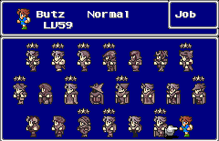
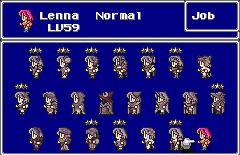
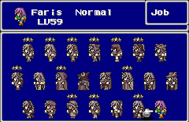
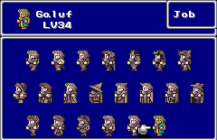
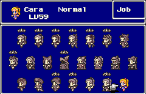

Character
ตัวละครในภาคนี้ เหมือนกันแทบทุกตัว เพราะความสามารถที่ได้มานั้น
เรียนรู้จากการเปลี่ยนอาชีพ (Job)
ทำให้ทุกคนสามารถเรียนรู้ความสามารถได้เหมือนๆ กัน
จะต่างกันก็เพียงค่าเริ่มต้นเท่านั้น
Butz Klauser

Sex : Male
Age : 20
Butz เป็นตัวละครเริ่มต้นของเกม นักผจญภัยธรรมดา
มีค่าพลังเริ่มต้นคือ
Strength : 28 (highest)
Agility : 25 (low)
Vitality : 27 (high)
Magic Power : 25 (low)
จึงเป็นตัวละคนที่ถนัดด้านโจมตี
อาชีพที่เหมาะสมเป็นพวก นักรบทั้งหลาย
Lenna Charlotte Tycoon

Sex : Female
Age : 18
Lenna เป็นเจ้าหญิงของเมือง Tycoon
มีค่าพลังเริ่มต้น คือ
Strength : 25 (low)
Agility : 26
Vitality : 25 (low)
Magic Power : 28 (highest)
จึงเป็นตัวละคนที่ถนัดด้านการใช้เวทย์มนต์
อาชีพที่เหมาะสมเป็นพวก ผู้ใช้เวทย์มนต์ทั้งหลาย
Faris (Sarisa Schrewiz Tycoon)

Sex : Female
Age : 20
Faris ถูกเลี้ยงดูโดยโจรสลัด แต่แท้จริงเธอเป็นพี่สาวของ Lenna
Strength : 27 (high)
Agility : 27 (high)
Vitality : 26
Magic Power : 26
เป็นตัวละคนที่มีพลังโจมตีและความเร็วสูง
อาชีพที่เหมาะสมเป็นพวกที่ต้องใช้ความเร็ว เช่น นินจา, ขโมย, ซามูไร
Galuf Doe Baldesion

(เอื้อเฟื้อรูป โดยคุณ Tachyon)
Sex : Male
Age : 60
ชายแก่ความทรงจำเสื่อม แต่เมื่อเล่นไป จะทราบความจริงที่น่าตกใจ...
Strength : 27 (high)
Agility : 24 (lowest)
Vitality : 28 (highest)
Magic Power : 24 (lowest)
เป็นตัวละคนที่มีพลังโจมตีและทนทานสูง
อาชีพที่เหมาะสมเป็นพวก นักรบทั้งหลาย
Cara Mayer Baldesion

Sex : Female
Age : unknow
Cara เป็นหลานสาวของ Galuf
ซึ่งในตอนท้ายของเกม Galuf จะถ่ายทอดพลังทั้งหมดของเขาให้แก่เธอ
อาชีพที่เหมาะสมเป็นพวก ผู้ใช้เวทย์มนต์ทั้งหลาย